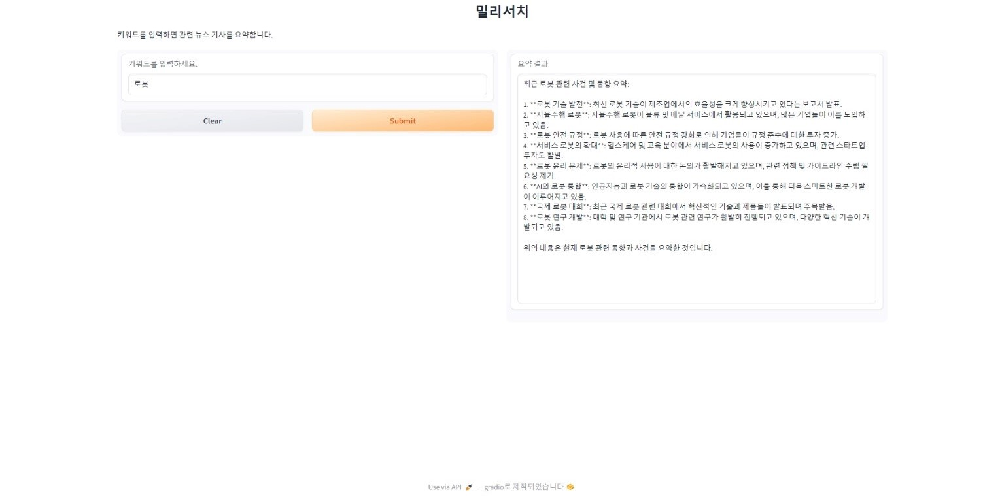

https://github.com/PolyGon-13/Crawler_AI.git
GitHub - PolyGon-13/Crawler_AI: 뉴스 기사 수집 및 요약 AI
뉴스 기사 수집 및 요약 AI. Contribute to PolyGon-13/Crawler_AI development by creating an account on GitHub.
github.com
위 프로젝트는 검색어를 입력하면 네이버 API를 이용하여 해당 검색어와 관련있는 뉴스 기사 링크를 수집하고 newspaper 라이브러리를 이용해 해당 링크의 본문을 긁어내어 GPT API에게 전달하여 요약하도록 한다. 구글 코랩 환경에서 진행하였으며 아래 사이트들을 참고하여 네이버 API 및 GPT API를 준비한다.
https://ai-creator.tistory.com/8
네이버 OpenAPI 사용하기 (준비 사항 : 사용자 인증)
> Client ID 얻기 Client Secret 얻기 검색 API 간단 테스트 OpenAPI들은 인증된 사용자에게만 서비스를 제공합니다. 네이버에서는 인증된 사용자를 'Client ID'와 'Client Secret'을 제공하여 구분하고 있습니다.
ai-creator.tistory.com
https://hyunicecream.tistory.com/78#google_vignette
ChatGPT, 챗gpt API 사용법 - 금액 충전, Key(키) 발급, Json형식 출력 등
ChatGPT API 사용법에 대해 설명하고자 합니다. 금액충전, Key 발급, 사용하기(질문), 모델, Json형식으로 출력 등 여러가지 방법에 대해 설명하고자 하니, API사용이 처음이신분에게 다음 글이 도움이
hyunicecream.tistory.com
우선 위 깃허브의 requirements.txt를 다운로드 후 아래 명령어로 필요 라이브러리를 설치한다.
pip install -r requirements.txt
아래의 key 부분에 API들을 넣어준다.
client_id="key1" # naver client_id api
client_secret="key2" # naver client_secret api
api_key="key3" # gpt api
client=OpenAI(api_key=api_key)
아래 코드는 구글 코랩 환경인 경우에만 넣어준다.
nest_asyncio.apply()
웹 페이지 환경처럼 실행하는 것을 원해서 gradio 라이브러리를 사용하여 아래와 같이 구성해주었다.
- fn : 사용자가 입력한 데이터를 처리할 함수를 지정
- inputs : 입력으로 사용할 위젯 정의
- outputs : 출력으로 사용할 위젯 정의
- title : 인터페이스의 제목
- description : 입력 상자 부근에 표시될 설명
- allow_flagging : 사용자의 입력에 대한 플래그(신고) 활성화 여부
iface = gr.Interface(fn=search_and_summarize,
inputs=gr.Textbox(label="키워드를 입력하세요."),
outputs=gr.Textbox(label="요약 결과"),
title="제목",
description="키워드를 입력하면 관련 뉴스 기사를 요약합니다.",
allow_flagging=False)
if __name__ == '__main__':
iface.launch()
gradio 인터페이스에서 입력한 검색어가 search 매개변수로 전달된다.
수집할 기사의 링크의 개수인 data_limit를 적절하게 설정하고, API 요청이 실패하였을 경우의 예외처리를 해주었다.
또한 수집한 기사와 관련한 정보를 json 파일로 저장하도록 하여 어떤 기사를 참조하였는지 볼 수 있도록 하였다.
def search_and_summarize(search):
node='news'
cnt=0
data_limit=100 # 수집할 데이터 개수
jsonResult=[]
news_arr=[]
summarize=[]
jsonResponse=getNaverSearch(node,search,1,100) # 한 번에 수집할 데이터 개수 (1번에 10개씩 수집)
if jsonResponse is None:
return
total=jsonResponse['total']
total_pages=min(data_limit//100,total//100)
while ((jsonResponse is not None) and (jsonResponse['display']!=0) and cnt<data_limit): # API 요청이 실패하거나 데이터가 없는 경우에 break
for post in jsonResponse['items']:
cnt+=1
getPostData(post,jsonResult,cnt,news_arr)
if cnt>=data_limit:
break
start=jsonResponse['start']+jsonResponse['display']
jsonResponse=getNaverSearch(node,search,start,100)
with open('%s_%s.json'%(search,node),'w',encoding='utf8') as outfile:
jsonFile = json.dumps(jsonResult,indent=4,sort_keys=True,ensure_ascii=False)
outfile.write(jsonFile)
asyncio.run(extract_text_from_url_async(news_arr,summarize))
summary_result=request_gpt(summarize,search)
return summary_result
아래 코드는 네이버 검색 API를 요청하여 검색어와 관련있는 기사의 링크를 수집하는 부분이다.
# API 요청 URL 생성 및 요청 함수
def get_RequestURL(url):
req=urllib.request.Request(url) # urllib.request 함수를 통해 url을 받음
req.add_header("X-Naver-Client-Id",client_id) # 클라이언트 아이디를 입력받음
req.add_header("X-Naver-Client-Secret",client_secret) # 클라이언트 시크릿을 입력받음
try:
response = urllib.request.urlopen(req)
if response.getcode()==200: # 요청 성공
return response.read().decode('utf-8')
except urllib.error.HTTPError as e:
if e.code==429: # API 요청 한도 초과
time.sleep(60) # 60초 대기
return get_RequestURL(url) # 재시도
except Exception as e:
return None
# 네이버 검색 API 호출 함수
def getNaverSearch(node,search,start,display):
base="https://openapi.naver.com/v1/search"
node="/%s.json"%node
parameters="?query=%s&start=%s&display=%s"%(urllib.parse.quote(search),start,display)
url=base+node+parameters
responseDecode=get_RequestURL(url)
if (responseDecode==None):
return None
else:
return json.loads(responseDecode)
다음은 수집한 링크를 바탕으로 기사의 제목, 링크, 작성 날짜 등의 정보를 추출하는 부분이다.
# 기사 정보 추출 함수
def getPostData(post,jsonResult,cnt,news_arr):
title=post['title']
link=post['link']
pDate=datetime.datetime.strptime(post['pubDate'],'%a, %d %b %Y %H:%M:%S +0900')
pDate=pDate.strftime('%Y-%m-%d %H:%M:%S')
# org_link=post['originallink']
# description=post['description']
jsonResult.append({'cnt':cnt,'title':title,'link':link,'pDate':pDate}) # 번호, 제목, 링크, 날짜 저장
news_arr.append(link) # 링크 저장
return
URL에 대한 HTTP 요청과 응답 처리를 비동기적으로 처리함으로써 처리속도를 4~5분에서 3~4분 가량으로 단축시켰다. (비동기적 코드는 구글을 참조하여 적어서 아직 공부가 더 필요할 것 같다...)
async def fetch_article(url,session,summarize):
config=Config()
config.browser_user_agent='Mozilla/5.0 (Windows NT 10.0; Win64; x64) AppleWebKit/537.36 (KHTML, like Gecko) Chrome/85.0.4183.121 Safari/537.36'
config.request_timeout=15
try:
async with session.get(url,ssl=False) as response:
article=Article(url,config=config)
article.set_html(await response.text())
article.parse()
summarize.append(article.text)
except Exception as e:
print(f"Failed to download article at {url}. Error: {e}")
async def extract_text_from_url_async(news_arr,summarize):
async with aiohttp.ClientSession() as session:
tasks=[fetch_article(url,session,summarize) for url in news_arr]
await asyncio.gather(*tasks)
GPT 모델 사용 설정을 하는 부분이다.
- model : 사용할 모델의 이름 (저렴한 gpt-4o-mini 모델을 사용하였다.)
- max_tokens : 모델이 생성할 수 있는 최대 토큰 제한 수
- temperature : 생성된 텍스트의 창의성을 제어하는 값 (값이 0에 가까울수록 모델이 더 결정적으로, 1에 가까울수록 랜덤성이 높아져 다양한 결과가 생성된다.)
- top_p : 누적 확률 기반 필터링을 제어하는 파라미터 (모델이 예측할 때 높은 확률을 가진 후보군을 얼마나 다양하게 고려할지 설정한다. 1.0이면 모든 가능성을 열어두는 설정이다.)
- frequency_penalty : 반복 단어 사용을 억제하는 패널티 (값이 클수록 모델이 동일한 단어나 구절을 반복하는 것을 피한다.)
- presence_penalty : 새로운 주제나 단어 사용을 장려하는 패널티 (값이 클수록 새로운 단어와 표현을 더 많이 사용하려고 한다.)
def news_summarize(prompt,model="gpt-4o-mini",max_tokens=1000,temperature=0.7,top_p=1.0,frequency_penalty=0.0,presence_penalty=0.0):
response=client.chat.completions.create(
messages=[
{"role":"system","content":"You are a newspaper summarizer."},
{"role":"user","content":prompt}
],
model=model,
max_tokens=max_tokens,
temperature=temperature,
top_p=top_p,
frequency_penalty=frequency_penalty,
presence_penalty=presence_penalty,
)
return response
prompt에 GPT에게 질문할 내용을 입력한다.
summarize는 위에서 기사 본문을 긁어내어 저장해둔 리스트.
output에 GPT의 응답을 담아서 return 하도록 하여 gradio의 outputs Textbox 위에 출력할 수 있도록 한다.
def request_gpt(summarize,search):
for text in summarize:
prompt=f"{text}. 당신은 위의 {search}와 관련된 기사들만을 찾아내어 요약해야 합니다. 관련 없는 내용은 배제하고 관련 있는 내용들을 모두 함축하고 최근의 동향을 빠르게 파악할 수 있도록 내용보다는 사건 위주의 리스트 형식으로 요약해주세요."
dialogue=news_summarize(prompt)
output=""
with open('news_summary.txt','a',encoding='utf-8') as file:
for choice in dialogue.choices:
message_content=choice.message.content.strip()
file.write(message_content+'\n\n')
output+=message_content
# print(message_content)
return output
